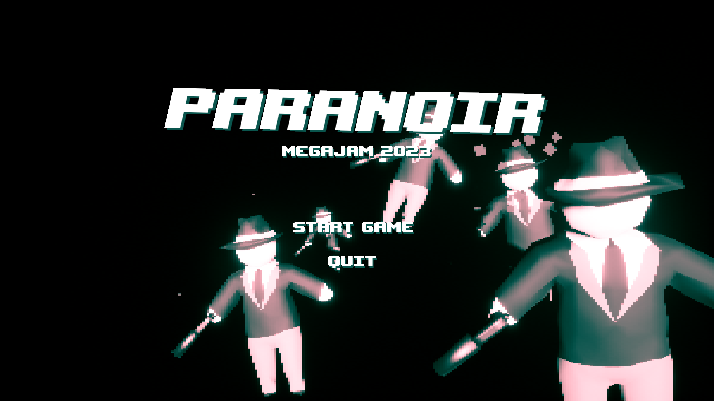
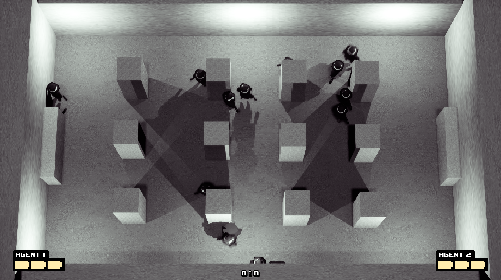
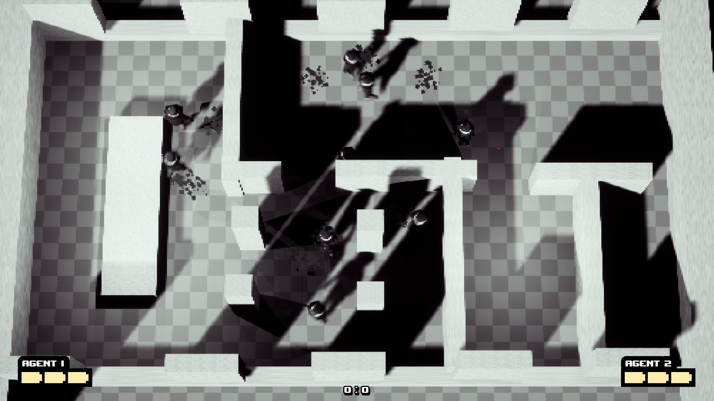
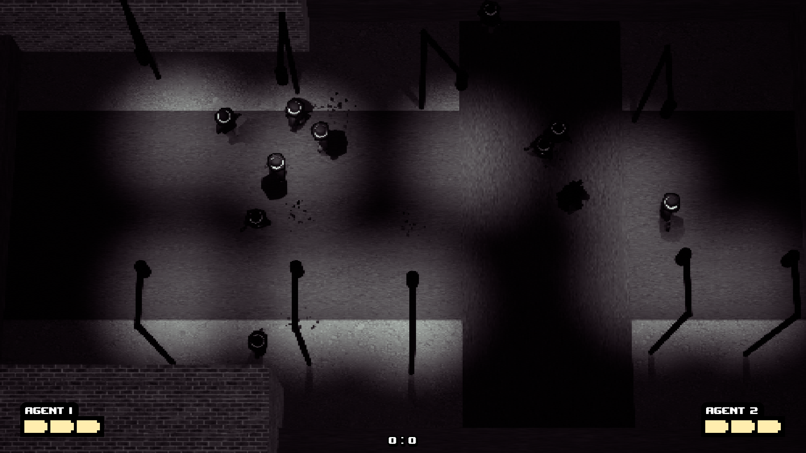
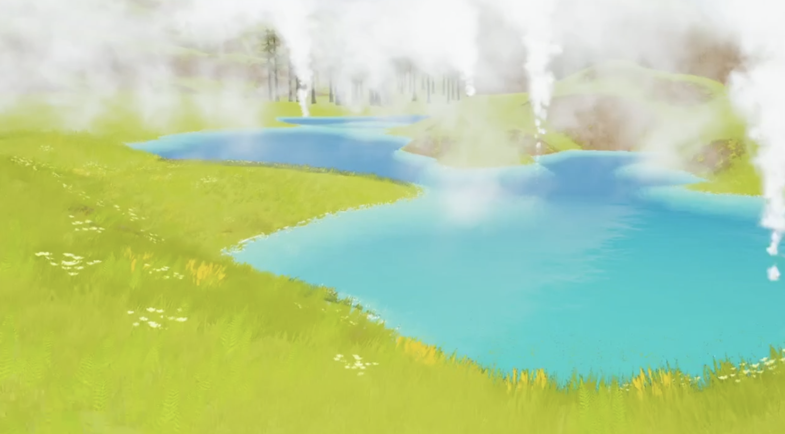
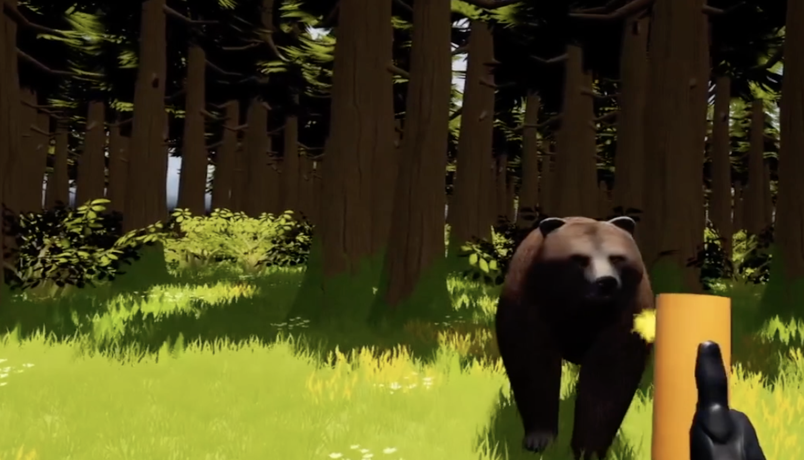
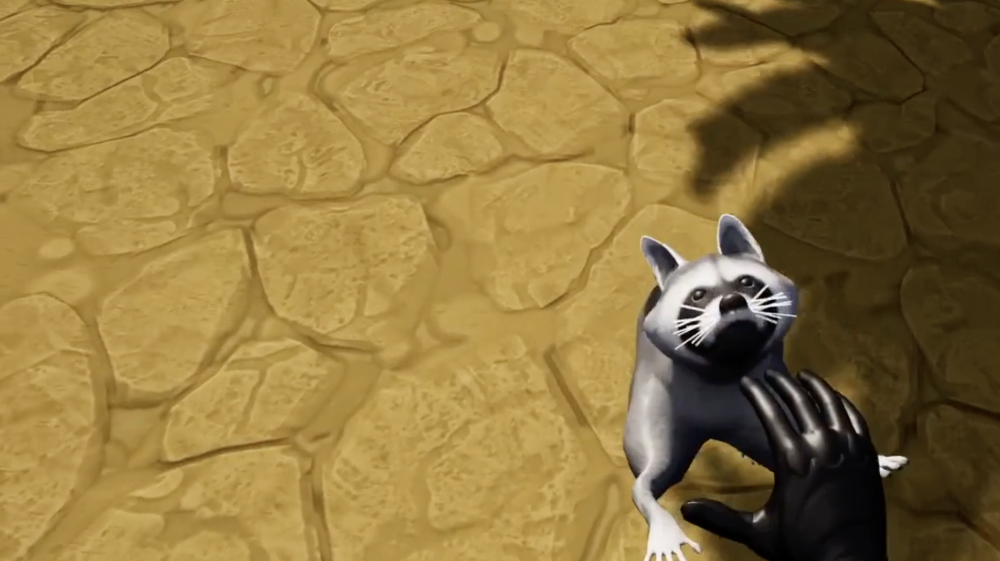

Daniel Jaymin Park
Skills
Languages: C/C++, C#, Python, Javascript, CUDA, GLSL, SQL
Technologies: Unreal Engine, OpenGL, Qt, React, VueJS, Flask, REST APIs, Unity, Git, Figma, Blender, Final Cut Pro
Experience
-
- Verglas [studio wip]
Game Developer (Present)
- Tesla
Vehicle Software Intern (Summer 2024)
- Raytheon
Software Developer Intern (Summer 2023)
Projects
Ronin Trail | Website
Kickstarter
Steam
Devlog

Solo developer of Ronin Trail, a video game in Unreal Engine 4 with 70,000+ wishlists on Steam; Responsible for gameplay
programming, AI & behavior trees, map design, technical art, animation, 3D modeling, SFX
Recipient of an Epic MegaGrant and featured on Epic Games’ blog
Ran a Kickstarter campaign during Summer 2022 which raised $45,000 from 1627 backers
Paranoir | itch.io

1st place winner of Michigan's 2023 MegaJam



National Parks Virtual Reality
Developed VR simulation of various national parks in Unreal Engine 5 to educate users on park safety and wildlife for Meta Quest Pro



Arbor GO Augmented Reality
Developed AR IOS app in Unity3D to collect seeds and plant trees around your city
Virtual Memory Manager
Created a virtual memory manager which supports file backed and swap backed pages; Manages process address spaces and
evicts physical pages using a clock queue algorithm; Maintains read/write permissions and residency of pages.
CDN Video Streaming Service
Built streaming service backend with adaptive bitrate selection, DNS load balancing, and an HTTP proxy server to stream video at high bit rates from the closest server to a given client.
Multithreaded Network File Server (C++)
Built a thread-safe file server in which supports any number of concurrent client requests sent over a network (read, write,
create, and delete); Utilizes reader-writer locks to optimally perform operations in parallel while ensuring crash consistency;
Communicates with clients through TCP sockets;
Image Sharing Social App
Built social media app using React.js frontend, Python backend, and SQL database deployed on AWS EC2 instance
Web Search Engine
Generated inverted index from 3500 web-scraped wikipedia pages utilizing distributed-compute map reduce programs. Created REST API server with Python Flask to calculate search result hits with Google’s Page Rank algorithm and built front-end with Jinja2
Dog Breed CNN Classifier (Python)
Built a CNN in to identify the breed of a given dog image; Fine tuned model architecture and hyperparameters to achieve an
accuracy of 90%;
Optimized 3D Convolution GPU Kernel
Wrote an optimized GPU kernel in CUDA to perform 3D convolution; Utilized tiling to reduce global memory reads;
Recorder Legend Youtube
Youtube channel with 550,000 subscribers
Website template github.com/owickstrom/the-monospace-web